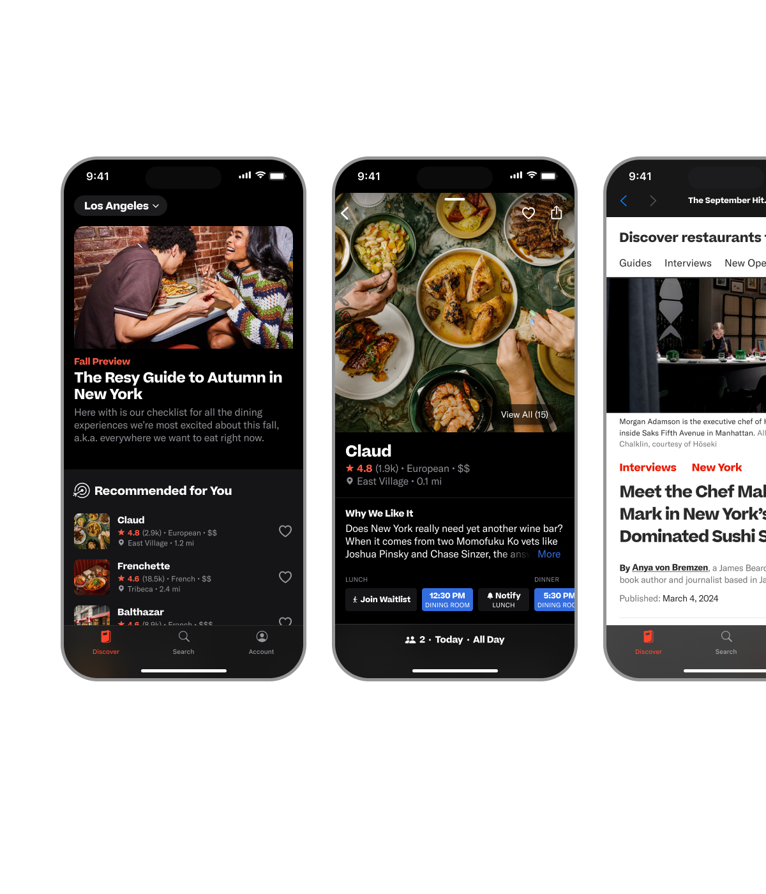
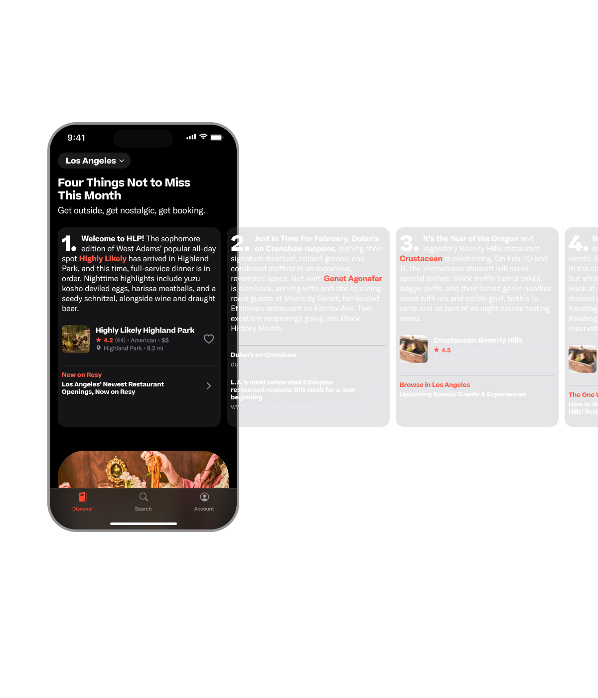

Context
The Resy product surface had strong editorial content and a growing set of booking tools, but discovery flows still carried friction between inspiration and action. The objective was to tighten that loop and increase meaningful exploration inside the app.
Challenge
Discovery had to serve different intents in the same session: browsing editorial stories, finding restaurants fast, and saving options for later. The product needed clearer hierarchy and stronger transitions across those intents without fragmenting the experience.
Strategy
- Research + journey mapping: identified breakpoints between discovery, list-making, and reservation triggers.
- Editorial-first discovery: structured the top of funnel around Resy editorial surfaces and algorithmic collections to improve relevance and recirculation.
- Navigation re-architecture: modernized interaction patterns with a more sheet-based, gesture-forward model to reduce friction.
- Cross-functional operating loop: aligned product, editorial, and engineering to keep the system coherent as feature velocity increased.
Outcome
The update tightened the path from curiosity to booking and gave content and product teams a shared surface they could evolve together. It also established a durable structure for future discovery iterations as the app scaled.
Related coverage: Food & Wine: Resy updates app with restaurant inspiration stories.
Visuals

